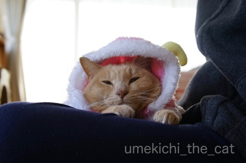

12月はトナカイさん [梅吉]



そうですね。梅吉さんには夜道を走るなんて務まりそうにありませんものね！
勝手に自分の好きなところに行っちゃいそうだし。

でもその半白目はルドルフさんの赤いお鼻よりも
暗い夜道をよく照らしそうですよ( ´艸｀)
〜おまけ〜
トナカイケープから出たおちりが可愛すぎるw


カフェオレ色の梅吉

梅吉 2023年8月10日 永眠


梅吉と出会った譲渡会

犬猫の理由なき殺処分ゼロ
妄想広告
UMEKICHI 光

爆発的に早い！
時々攻撃的！
Thanks to Mr.Boss365
爆発的に早い！
時々攻撃的！
Thanks to Mr.Boss365

ピンクのトナカイさん! 梅吉さんそのまま寝ちゃうくらいだから暖かくて気に入ったのかな? いややわぁの突っ伏してるのもおちりも可愛いです。半分白目はフクロウさんになっちゃってますね。
by zombiekong (2018-12-03 01:29)
白目がツボです＾＾
by ぽちの輔 (2018-12-03 06:21)
トナカイさん、夜にしばかれる！確かにそうですね^^
梅吉さんには合わないですね。
by ニコニコファイト (2018-12-03 07:08)
ピンクのトナカイ梅吉さん、可愛すぎます=(^.^)=
こんなラブリーな姿で夜道を走ってたら、悪い人に
誘拐される可能性があるのでぬくぬくお父さんの膝で
サンタさんを待つのが正解♪( ´▽｀)
あっ、でも半白目を見せれば悪い人を撃退できるかもw
by ニッキー (2018-12-03 07:37)
梅吉さんピンクのトナカイさんですね！
ピンクのカバさんじゃなくて良かったですね(笑)
最後の白目は眠くなっちゃったのでしょうか(^^)
by ma2ma2 (2018-12-03 07:39)
可愛い可愛いトナカイさん♪
プレゼントは届けられないけど
みなさんの心にほっこりが
たくさん届いてますよぉ～(#^.^#)
by きぃ (2018-12-03 07:52)
梅吉さんピンクがとってもお似合いですね～♪
ごめん寝状態がツボです(笑
いややわぁってホントに言ってそうです。
by marimo (2018-12-03 10:01)
おはようございます。
ピンクの梅吉ちゃんトナカイ！！可愛い！！女の子風にもなりますね。
どこで、被り物の仕入れてくるのか？
一足早い被り物のクリスマスプレゼントですね！！
コピーが面白すぎ！！半白目名演技（笑）も素晴らしい！？(=^･ｪ･^=)
by Boss365 (2018-12-03 10:27)
うふふふ。かわいいかわいいトナカイさんね^^
お約束（？）の白目も堪能したわ。ありがとうーｗｗ
ピンク似合うね！
そのむっちりなお尻をスンスン嗅ぎたいわｗｗ
by リュカ (2018-12-03 11:01)
梅吉くんのピンク初めてじゃないですか？めっちゃ似合います(*^_^*)
男の子なのにピンクが似合うとは罪な男ですなぁ。可愛すぎますわ～～
by palpal (2018-12-03 14:44)
イヤ〜ァ、なんとも愛くるしい梅吉さん。
トナカイですって（笑）
夜道をしばかれながら走っての肉体労働って、梅吉さん可笑し過ぎ。
いややわあ・・・・って、お腹が引きちぎれそうです（笑）
おかーちゃん、コメント面白過ぎでっせ！
by kiki (2018-12-03 14:47)
梅吉さん、夜の宅配は可愛そうですね(^^;)
やっぱりお膝の上でぬくぬくこそ梅吉さんですよ！
しかし、可愛すぎる（笑）
by kou (2018-12-03 19:03)
ピンクトナカイ可愛いニャ～
by 英ちゃん (2018-12-03 19:15)
うめきちさんは、となかいさんにはなれないのんやね。
おおさかべんがきまってはるね。
おおさかべんはようわからん。
とにかくたのしいうめきちさんでええで^^;
by riverwalk (2018-12-03 20:15)
トナカイケープも良くお似合い^ ^
by ryang (2018-12-03 20:37)
おまけの一枚が猫変態にはツボで～す(*^▽^*)
にゃんとも愛らしいむっちりオチリ♪
がぶ～っと噛みつきたいです^^
確かに雪の夜道をしばかれて走るの楽しくない(≧▽≦)
ピンクのトナカイさんはお膝を温めるのが任務、ということで！
by ゆきち (2018-12-03 21:34)
えええ！トナカイさんっておっちゃんにしばかれてたんですかっ！！ ^^;
トナカイケープお似合いですね。可愛いなあ。^^)
by yes_hama (2018-12-03 21:38)
可愛いトナカイさんみ～つけた(*^-^*)
ホント！すぐにでも出勤してお仕事できそうなのに
いややわぁ・・・・・ってｗ
おとーさんのお膝でぬくぬくが一番だよね。
おまけのおちり・・・可愛いっ♪
by emi (2018-12-03 21:46)
半白目は笑っちゃったけど、トナカイ梅吉さん
かわいい～～～っ！(>∀<●)ﾉ
by yuppie (2018-12-03 23:24)
ピンクでトナカイ？！
可愛すぎー！
最初の写真はトナカイに見えなかったけど、なるほど角度によってだったのね～角が立派なトナカイなんですね。
着たまま寝ちゃうのが可愛い～オチリもむっちゃ可愛い♪
半白目までサービス、梅吉さん抜かりないわぁ＾＾
by sana (2018-12-04 00:28)
あらまーかわいい関西弁のトナカイさん^^
ザ・仕事人の渋いのもいいですが、実は
ファンシーなのも似合っちゃったりするのですね。
by Ja-Kou66 (2018-12-04 00:34)
さて、トナカイニャンコのうめきっつぁん！”
サンタのそりを引いてもらおうか～！”寒がってんじゃねぇよ～(^_^)/””””*
by 旅爺さん (2018-12-04 05:26)
おっさんにしばかれて走らされるトナカイ！
確かにそうやわ。夜中に動物虐待(^_^;)
おまけにサンタおっさん、デブで重そうやし、
荷物いっぱい積んでるしー！
by よーちゃん (2018-12-04 08:49)
梅吉さん。かわいすぎるやろーーーー！！！
そんなプリティなさんが、夜道なんか出たら、
つれていかれちゃいます！
大人しく、おとーさんのお膝の上で、
おちりを出しててください？な(^^♪
それにしても、淡いピンク色と、
梅吉さんのミルクティー色がとっても似合ってます。
おかーさんセレクト、さすがnice!
by morichan (2018-12-04 14:12)
首回りが暖かくなって、ねむくなっちゃいましたか〜^ ^。
なんか気に入ってるみたいじゃないですか？ふふ。
by nachic (2018-12-04 23:46)
この姿は何かを狙ってるのか？ご飯の催促かな？。
by 旅爺さん (2018-12-05 17:15)
zombiekongさん＞
柔らかくて軽い素材なので被ってもあまり気にせず
むしろ暖かそうにしていました( ´艸｀)
半分白目、確かに！フクロウってこういう目になりますよね・・・
梅吉のメンフクロウ説がさらに補強されたかもwww
ぽちの輔さん＞
夏場より白眼の純度は低いですが
なかなかだと思いまーす(≧▽≦)
ニコニコファイトさん＞
子供の夢を壊さないためにも
サンタさんはしばいたりしない、と思いたいですねwww
ニッキーさん＞
そうします♪そうします♪
梅吉はお膝でぬくぬくがふさわしいですよね＾＾
それに梅吉が夜にお出かけとなると当然私も同伴なので
冬の夜はちょっと勘弁して欲しいですw
梅吉の半白目のお笑いパワーで悪い人撃退＆更生させる、
なんて出来るかも！？
ma2ma2さん＞
ピンクのカバさんもかわいいですが
12月なのでトナカイということでお願いします(^_－)☆
フリース素材のあったかい被り物なので
思わず眠くなちゃった様ですよーwww
きぃさん＞
まぁ♡心にほっこり！
それが梅吉の目指しているところです！！
遠いところまでちゃんと届くと良いな♪
marimoさん＞
実は梅吉にピンク・・・？と思ったのですが
以外にも似合っちゃいましたw
トナカイのツノの重さで被り物がずるずると。
本にゃんのモチベーションの低さもあって
ごめん寝になっちゃいました ( ´艸｀)
Boss365さん＞
ピンクが思ったより似合っちゃいました(≧▽≦)
梅吉の被り物はほとんどおっとがガチャで仕入れてきます (⌒_⌒;
仕事帰りにガチャ街みたいのがあるのですよ・・・
このケープはスリコのもので体をふんわり包み込むのが
良かった様です＾＾
フィット感が足りない時にはちょっと手を加えたりしていますよw
でもすももちゃんは被り物禁止、ですよね(^_－)☆
リュカさん＞
被り物で白目になるとは思わなかったわ(*>艸<)
フリース素材でふわっとしてたからあったかくて気持ち良かったみたい。
ごめん寝のポーズにしてもむっちりお尻にしても
お顔が写ってないのにこんなに可愛いなんてー！！
ねこってすごいね0(≧▽≦)0
plapalさん＞
そうなのー！
私の中には梅吉にピンクはない選択だったんだけど。
ピンクしかなかったけど梅吉に着せたいとおっとが（爆）
買ってきましたよw
親の気持ちが通じたのか似合っちゃいました ( ´艸｀)
kikiさん＞
梅吉の表情を読み取るとこの様なコメントになりました(^_－)☆
ピンクは全然トナカイじゃないのに
被せるとちゃんとトナカイになったのも笑えましたwww
最近は被り物の付き合いも良くて・・・ええ子です！
kouさん＞
梅吉が夜に出歩くとなると私も同行なので寒いのは嫌やわぁwww
お家でぬくぬくが一番ですよね！
ピンクがこれほど似合うとは思ってませんでした( ´艸｀)
英ちゃんさん＞
思ったよりもピンクが似合いました＾＾
さすが我が子ですwww
riverwalkさん＞
わし うまれもそだちもなにわっこやねんな
おおさかべんは ねいてぃぶ ちゅーやつやw
りばーうぉーくはんのおおさかべんも しゅっとしてはるで＾＾
ryangさん＞
初めてのファンシー路線でしたがイケました(๑˃̵ᴗ˂̵)و
新しい世界が広がりそうでーす！！
ゆきちさん＞
普段は出しっ放しのおちり（笑）ケープから出ているだけで
こんなに可愛いさが増すとは猫変態の私も新発見でした！
ゆきちさんになり変わってもみもみくんくんしておきましたwww
しばかれるトナカイさんなんて夢のないコメントをしちゃったかなと
ちょっと反省です。
サンタランドはトナカイさんが自主的に走るので
しばかれませんと子供達には言ってあげたい・・・
もしくはトナカイさんとサンタさんは寒くなると
一緒に団子になるんだよ、とか！？( ´艸｀)
yes_hamaさん＞
サンタランドではしばかなくても
トナカイさんは走ってくれそうですよねw
子供の夢のためにもそういうことにしたいと思いますwww
トナカイケープぬくぬく暖かなのも気に入ってくれた様です＾＾
emiさん＞
箱入り息子なものでwww
寒いのも暑いのもダメなんですよねぇぇぇ (^_^;)
梅吉にはあちこちにプレゼント届けるお手伝いではなく
私たちにお膝ぬくぬくのプレゼントを届けてもらいます(^_－)☆
おちり、可愛いでしょ(〃▽〃)
出しっ放し（笑）もいいけど半分出ているのがツボー！！！
yuppeiさん＞
被り物で半白目になるとは思ってませんでした(*>艸<)
ピンクが似合う漢、梅吉ですw
sanaさん＞
例によって（笑）おっとが買ってきたのですが
ピンク一択だったのですって。
ファンシーなトナカイさん思わぬ変化球でしたが、似合っちゃいました( ´艸｀)
フリース素材はぬくぬくして気持ちよかったのでしょうか
まさかの半白目、コスプレも堂に入ってきた様です(´▽｀)
Ja-kou66さん＞
まさかのファンシー路線でしたが似合ってしまいましたw
大きめのマントがふわりと体を包むせいか全然嫌がりませんでした＾＾
ちなみにスリコで買いましたよー。（おっとがw）
旅爺さん＞
あらら＾＾チコちゃんからお叱りを受けた様なw
箱入り息子なので寒がり暑がりに育ってしまいました(^_^;)
写真を撮るときはおもちゃを振り回していまーす。
ご飯の催促はこんな大人しくしていませんw
実力行使に出ますから(-_-メ)
よーちゃん＞
サンタランドではしばかなくても走る、と
子供達には伝えてあげたいですwww
しかも魔法で空飛ぶから重くもないんだよ、と。
ん？そうするとトナカイって必要ないですよね・・・
大人の事情？
morichanさん＞
確かに！悪い人に連れていかれる可能性も！（親バカw
が、心配性のおかーさんが同行していて
悪い人は怖くてよってこないと思います(*>艸<)
おかーさんも（道産子のくせに）寒がりなので
夜道は走りたくないわぁ・・・
このケープ、おっとが買ってきたのですよ＾＾
ピンク一択だった様ですが
「ピンクも似合うはず！」と確信に満ちた顔で持ってきました(≧▽≦)
nachicさん＞
フリースのあったかな素材が気持ち良かったみたいですよ＾＾
素材と合わせて「わし ぴんくも いけてるわ・・・」と
気に入ったのかもしれません( ´艸｀)
by ちぃ (2018-12-05 17:58)